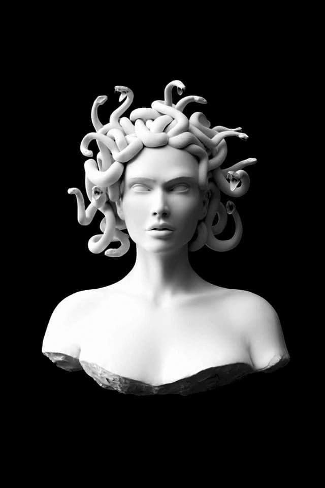
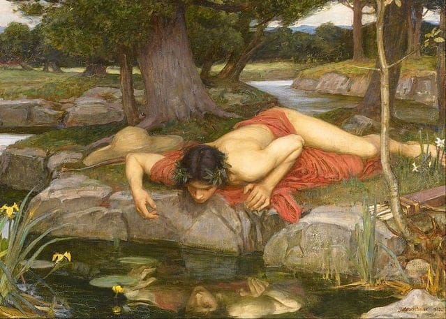
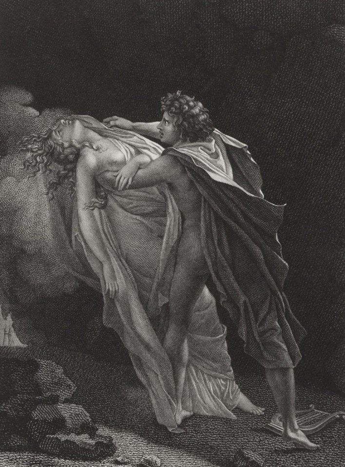
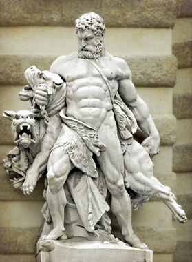

The Greek
What are people saying?

Icarus
Icarus the son of Didalus, tried to escape from Crete with wings of Didalus made of feathers and wax. Didalos warned Icarus to not fly high or very low, Icarus was impressed by the beauty of the sun and flew high, The sun melted wax wings and fell into the sea and died. The myth is a philosophical projection of not greed.
Icarus the son of Didalus, tried to escape from Crete with wings of Didalus made of feathers and wax. Didalos warned Icarus to not fly high or very low, Icarus was impressed by the beauty of the sun and flew high, The sun melted wax wings and fell into the sea and died. The myth is a philosophical projection of not greed.
Sisyphus
Sisyphus was the king of the king of the city of Eforia (Greek City). Sisyphus was so clever that he defied Zeus himself, And deceived the Messenger of Death and fled, As a punishment, Zeus judged him to be a huge rock chisel for a mountain peak, and all that connects to the top of the rock rolling and Sisyphus begins the task of the first forever, And remains a symbol of eternal suffering
Sisyphus was the king of the king of the city of Eforia (Greek City). Sisyphus was so clever that he defied Zeus himself, And deceived the Messenger of Death and fled, As a punishment, Zeus judged him to be a huge rock chisel for a mountain peak, and all that connects to the top of the rock rolling and Sisyphus begins the task of the first forever, And remains a symbol of eternal suffering

Medusa
Medusa was a very beautiful girl to the point that anyone who sees her paralyzes in their place as a reason of her beauty. Poseidon"god of the seas" raped her in the temple of Athens. Athens "goddes of war and wisdom" got angry that it happened in her temple. Athena cursed Medusa that she made her ugly and turned her hair into snakes. anyone that sees her, turns into stone..Literally.
Medusa was a very beautiful girl to the point that anyone who sees her paralyzes in their place as a reason of her beauty. Poseidon"god of the seas" raped her in the temple of Athens. Athens "goddes of war and wisdom" got angry that it happened in her temple. Athena cursed Medusa that she made her ugly and turned her hair into snakes. anyone that sees her, turns into stone..Literally.

Narcissus
Narcissus was a very handsome young man who noticed the reflection of his image in a lake. He got opsessed with his image and sat contemplating his beauty and ignored all surroundings and refused the desire to live..then died. The term Narcisism came from this myth. And it's the exessive self love.
Narcissus was a very handsome young man who noticed the reflection of his image in a lake. He got opsessed with his image and sat contemplating his beauty and ignored all surroundings and refused the desire to live..then died. The term Narcisism came from this myth. And it's the exessive self love.

Orpheus and Eurydice
Orpheus "the god of art and poetry" the son of Apollo . He was proficient in music and singing. No creature can resist the beauty of his voice and playing of instruments. Even animals. He loved Euredeis. on their wedding day, she got bitten by a snake and she died. Orapheus cursed the injustice of fait and visited the underworld. He asked Hades "the god of death" to bring back his beloved wife.. Hades noticed the sadness in his voice and couldn't resist his beauty. So he agreed to return his dead wife on one condition.. He has to sing on his way out of the world of the dead and she'll follow him but he can't look behind. He could hear the sound of her footsteps all the way, he couldn't resist and he looked behind..so dhe died again. The myth is a great novel and art inspiration for tragedy.
Orpheus "the god of art and poetry" the son of Apollo . He was proficient in music and singing. No creature can resist the beauty of his voice and playing of instruments. Even animals. He loved Euredeis. on their wedding day, she got bitten by a snake and she died. Orapheus cursed the injustice of fait and visited the underworld. He asked Hades "the god of death" to bring back his beloved wife.. Hades noticed the sadness in his voice and couldn't resist his beauty. So he agreed to return his dead wife on one condition.. He has to sing on his way out of the world of the dead and she'll follow him but he can't look behind. He could hear the sound of her footsteps all the way, he couldn't resist and he looked behind..so dhe died again. The myth is a great novel and art inspiration for tragedy.

Heracles
Hercules begged Apollo to free him of his regret for killing his family, Apollo charged him with 12 difficult missions. Hercules performed all the missions AND more to the point that he became stronger than some gods. And when he died he became a god. The death of Hercules was after he got married to Dinira. She gave him a poisoned scarf that burned his body. The myth is great on the artistic level.
Hercules begged Apollo to free him of his regret for killing his family, Apollo charged him with 12 difficult missions. Hercules performed all the missions AND more to the point that he became stronger than some gods. And when he died he became a god. The death of Hercules was after he got married to Dinira. She gave him a poisoned scarf that burned his body. The myth is great on the artistic level.